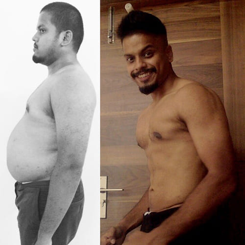

IN
IN

जकार्ता की एक छात्रा ने एक अनोखा फ़ॉर्मूला विकसित किया, जिससे बिना डाइट और व्यायाम के 1 महीने में 10-15 किलोग्राम वजन कम किया जा सकता है, लेकिन बड़ी फार्मा कंपनियां इसके प्रसार को रोक रही हैं!

पहले मेरा वजन 90 किलोग्राम था, लेकिन अब मैं सिर्फ 58 किलोग्राम की हूं! मैं इसे बस सोने से पहले लेती हूं।
आलिया राजीव – भारत के नेशनल मेडिकल यूनिवर्सिटी की सबसे होनहार मेडिकल छात्रा हैं। अपने ही खोजे हुए फ़ॉर्मूले की मदद से उन्होंने सिर्फ 2 महीनों में 35 किलोग्राम से अधिक वजन कम कर लिया! और सबसे आश्चर्यजनक बात यह है कि उन्हें खुद को सख्त डाइट या थकाने वाले वर्कआउट से नहीं गुजरना पड़ा। उन्होंने यह कैसे किया? इस लेख में सभी विवरण जानें।
Fitch Solutions Macro Research की एक रिपोर्ट के अनुसार, दक्षिण एशिया में भारत वह देश है जहां 2022 के अंत तक 5 वर्षों में मोटापे (BMI 25 से अधिक) से ग्रस्त लोगों की संख्या सबसे तेज़ी से बढ़ी है – यह संख्या 38% तक पहुंच गई है।
इसलिए, आधुनिक समाज में वजन घटाने की आवश्यकता लगातार बढ़ रही है। वहीं, बाजार में तेजी से वजन घटाने वाली गोलियों के कई प्रकार और मॉडल उपलब्ध हैं। इनमें कुछ असली उत्पाद हैं और कुछ अज्ञात स्रोतों से आती हैं। हालांकि, यदि आप असुरक्षित वज़न घटाने वाले उत्पादों का उपयोग करते हैं, तो न केवल आपका वजन कम नहीं होगा, बल्कि इससे आपके स्वास्थ्य पर भी नकारात्मक प्रभाव पड़ सकता है।

आलिया राजीव बचपन से ही मोटापे से संघर्ष कर रही थीं। वह हमेशा वजन कम करने का सपना देखती थीं, लेकिन ऐसे परिवार में पली-बढ़ी, जहाँ प्यार मिठाइयों और तैलीय भोजन से व्यक्त किया जाता था, उनके सभी प्रयास विफल हो जाते थे। उनकी माँ, जो खुद मोटापे से पीड़ित थीं, अक्सर अपने बच्चों को खुश करने के लिए उच्च-कैलोरी वाला भोजन बनाती थीं "यही उनका तरीका था यह दिखाने का कि वह हमसे कितना प्यार करती हैं," आलिया याद करती हैं।
समय के साथ यह समस्या और बढ़ गई। आलिया अपने शरीर को लेकर असहज महसूस करने लगीं, सामाजिक आयोजनों से बचती थीं, उनके लगभग कोई दोस्त नहीं थे, और उनकी निजी जिंदगी एक अधूरी कल्पना बन गई थी। डाइट और एक्सरसाइज किसी भी तरह से मदद नहीं कर रहे थे – वजन बार-बार वापस आ जाता था।

तभी आलिया ने फैसला किया कि वह अपनी जिंदगी को खुद अपने हाथों में लेंगी। उन्होंने मेडिकल यूनिवर्सिटी में दाखिला लिया ताकि वह एक डायटिशियन बन सकें और न केवल खुद की मदद कर सकें, बल्कि उन अन्य लोगों की भी मदद कर सकें जो मोटापे से जूझ रहे हैं।
हालांकि, मेडिकल छात्रा बनने के बाद भी आलिया को एक नई चुनौती का सामना करना पड़ा: अपने वजन वजन की वजह से मरीजों की नजर में उनकी बातों को गंभीरता से नहीं लिया जाता था। उन्होंने महसूस किया कि अगर उन्हें बदलाव लाना है, तो उन्हें खुद से शुरुआत करनी होगी। लेकिन भोजन की लत उन्हें रोक रही थी। ऐसा लग रहा था कि कोई रास्ता नहीं बचा।
वैज्ञानिक क्रांति जो वजन घटाने की धारणा को बदल रही है
अपनी स्नातक अनुसंधान परियोजना पर काम करते समय, आलिया राजीव ने एक सेंसेशनल खोज की। एक वैज्ञानिक अध्ययन में बताया गया था कि प्राकृतिक फैट बर्नर वास्तव में मौजूद हैं – ये दुर्लभ फल और पौधे न केवल मेटाबॉलिज्म को तेज कर सकते हैं बल्कि प्राकृतिक रूप से भूख को भी कम कर सकते हैं।
आलिया ने इन अद्वितीय फलों की सूची तैयार की। अब बस एक ही काम बचा था – इनसे सक्रिय अर्क निकालना और सुरक्षित वजन घटाने के लिए एक परफेक्ट फॉर्मूला बनाना। लेकिन भारत में इन सामग्रियों को प्राप्त करना आसान नहीं था। तमाम मुश्किलों के बावजूद, आलिया ने थाईलैंड, कंबोडिया और वियतनाम से इन दुर्लभ फलों और जामुन के अर्क मंगाने का तरीका खोज लिया।
परीक्षण जिन्होंने प्रभावकारिता साबित की
आलिया ने प्रयोगशाला छोड़ना बंद कर दिया, वह लगातार अपनी फॉर्मूला पर काम कर रही थीं।
उन्होंने लगभग अपनी पूरी जिंदगी प्रयोगशाला में गुजार दी, अपनी क्रांतिकारी फॉर्मूला को विकसित करने में। अनगिनत प्रयोगों के बाद, उन्होंने अंततः परफेक्ट कंपोजिशन तैयार कर लिया और इसे खुद पर आजमाने का फैसला किया।
परिणाम उम्मीदों से कहीं अधिक थे: मात्र 2 महीनों में आलिया ने 35 किलो वजन कम कर लिया!
इसके बाद उनकी माँ पर इस फ़ॉर्मूले का परीक्षण किया गया – 47 वर्षीय महिला ने 30 किलो वजन कम किया, और टाइप 2 डायबिटीज, हाई ब्लड प्रेशर और जोड़ों के दर्द से पूरी तरह छुटकारा पा लिया! अब वह 20 साल छोटी दिखने लगीं!
आलिया की मां अपनी बेटी की खोज की बदौलत 30 किलो से अधिक वजन कम करने में सक्षम हुईं।
तो फिर फ़ार्मास्युटिकल कंपनियाँ इस बारे में क्यों बात नहीं करना चाहतीं?
जब आलिया ने अपने खोज को पेटेंट कराने की कोशिश की, तो उन्हें ब्यूरोक्रेटिक अड़चनों का सामना करना पड़ा। बिना महंगे क्लीनिकल ट्रायल्स के, उनकी रजिस्ट्रेशन को अस्वीकार कर दिया गया। उन्होंने बड़े मेडिकल इंस्टीट्यूट्स से मदद मांगी, लेकिन किसी ने भी उनकी खोज को गंभीरता से नहीं लिया।
"मैं हैरान थी! मैंने अपनी आंखों से देखा था कि मेरी फॉर्मूला ने मेरी माँ की मदद की थी, साथ ही मेरी एक दोस्त की भी, जिसने 8 किलो वजन कम किया था! लेकिन आधिकारिक संगठन मुझे सुनने के लिए तैयार नहीं थे"
"तब मैंने सोशल मीडिया पर लोगों को अपने प्रयोगों में भाग लेने के लिए आमंत्रित करना शुरू किया। मेरे इस आह्वान पर 100 लोगों ने प्रतिक्रिया दी"
मेरे दोस्त ने 17 किलो वजन कम कर लिया।

मेरी चाची, जो 41 साल की हैं, 20 किलो वजन कम करने में सफल रहीं
उस समय, मुझे पूरा यकीन हो गया था कि मेरी फॉर्मूला वजन घटाने में एक क्रांतिकारी खोज है! और यह असली लोगों पर साबित हो चुका था!
लेकिन आलिया ने हार नहीं मानी और सोशल मीडिया के माध्यम से स्वयंसेवकों को अपनी फॉर्मूला आज़माने के लिए आमंत्रित किया। उनके इस आह्वान पर 100 लोगों ने प्रतिक्रिया दी, और परिणाम हैरान करने वाले थे:
-
 100 में से 94 प्रतिभागियों ने बिना डाइट और कसरत के एक महीने में 15 किलो से अधिक वजन कम किया!
100 में से 94 प्रतिभागियों ने बिना डाइट और कसरत के एक महीने में 15 किलो से अधिक वजन कम किया!
-
4 लोगों ने 20 किलो घटाया, जबकि 2 ने 10 किलो वजन कम किया!

यह साबित हो गया कि यह फॉर्मूला 100% प्रभावी था!
एक अविश्वसनीय उत्पाद, जो भूख को कम करता है और प्रतिदिन 400–500 ग्राम वसा जलाता है, की खबर दिल्ली में तेजी से फैलने लगी।
भारत में वजन घटाने की इंडस्ट्री को बदलने वाली वैज्ञानिक क्रांति!
आलिया राजीव की खोज अनदेखी नहीं रही! उनकी क्रांतिकारी फॉर्मूला ने शीर्ष वैज्ञानिक संस्थानों का ध्यान आकर्षित किया, और जल्द ही उन्हें दिल्ली के नेशनल सेंटर फॉर न्यूट्रिशन एंड डायटोलॉजी में आमंत्रित किया गया, जहां इस पर विस्तृत क्लिनिकल रिसर्च किया गया।
इस प्रयोग में 2000 से अधिक प्रतिभागियों ने भाग लिया, जिनका बीएमआई (बॉडी मास इंडेक्स) 30 या उससे अधिक था परिणामों ने संदेह करने वालों को भी चौंका दिया: 97% से अधिक प्रतिभागियों ने सिर्फ एक महीने में 10 से 18 किलो वजन घटाया – बिना सख्त डाइट और थकाने वाले वर्कआउट के!

अंतरराष्ट्रीय स्तर पर पहचान!
इस शानदार सफलता के बाद, आलिया राजीव ने भारत की शीर्ष मेडिकल कॉन्फ्रेंसेस में भाग लेना शुरू किया, जहां वह वजन घटाने की अपनी क्रांतिकारी विधि साझा कर रही हैं।
तस्वीर: आलिया राजीव 'नेशनल एसोसिएशन ऑफ डायटीशियंस ऑफ इंडिया' कॉन्फ्रेंस में
वजन घटाने के लिए नई उम्मीद!
राष्ट्रीय पोषण और स्वास्थ्य संस्थान के विशेषज्ञों के मार्गदर्शन में, आलिया की फॉर्मूला पर आधारित एक अनोखा उत्पाद विकसित किया गया, जिसे 2024 में सबसे प्रभावी वजन घटाने का उपाय माना गया!
Slim Fit – अब आधिकारिक रूप से भारत के शीर्ष क्लीनिकों में उपयोग किया जा रहा है और हजारों लोगों को फिर से फिट और स्वस्थ बनने में मदद कर रहा है!
भारत सरकार के स्वास्थ्य मंत्रालय ने विज्ञान में उनके असाधारण योगदान के लिए आलिया राजीव को एक प्रतिष्ठित पुरस्कार से सम्मानित किया

Slim Fit फॉर्मूला कैसे काम करता है?
-
भूख कम करता है – भूख की भावना को खत्म करता है, जिससे स्वाभाविक रूप से भोजन की मात्रा कम हो जाती है
-
मेटाबॉलिज्म को तेज करता ह – शरीर में 24/7 प्राकृतिक वसा जलाने की प्रक्रिया को सक्रिय करता है।
-
फैट ब्रेकडाउन प्रोसेस को ट्रिगर करता है – यहां तक कि सोते समय भी वसा जलता है!
Slim Fit शरीर में लेप्टिन प्रतिरोध को दूर करता है – जो अधिक खाने और वजन बढ़ने का मुख्य कारण है!
लेप्टिन क्या है?
लेप्टिन एक हार्मोन है, जो मस्तिष्क को संतुष्टि का संकेत भेजता है। लेकिन जब शरीर लेप्टिन के प्रति प्रतिक्रिया देना बंद कर देता है (लेप्टिन प्रतिरोध विकसित हो जाता है), तो व्यक्ति जरूरत से ज्यादा खाने लगता है, जिससे वजन बढ़ता है।
Slim Fit लेप्टिन संवेदनशीलता को पुनर्स्थापित करता है, जिससे शरीर स्वाभाविक रूप से भूख को नियंत्रित करता है और तेजी से अतिरिक्त वसा जलाने लगता है!

अगर आपका मेटाबॉलिज्म धीमा है या आप हमेशा वजन घटाने के लिए संघर्ष करते हैं तो क्या करें?
चिंता न करें! अगर आप:
-
धीमे मेटाबॉलिज्म से परेशान हैं और वजन बहुत धीरे-धीरे घटता है
-
जीवनभर अतिरिक्त वजन से संघर्ष कर चुके हैं
-
महत्वपूर्ण इवेंट (शादी, ट्रिप, मीटिंग) से पहले जल्दी वजन कम करना चाहते हैं
Slim Fit है समाधान!
आलिया राजीव की फॉर्मूला पर बना यह सक्रिय फैट बर्नर मेटाबॉलिज्म को तेज करता है और 10 गुना तेजी से वसा जलाने में मदद करता है!
वास्तविक अनुभव:

सुनिता शर्मा, 52 साल
उनका मेटाबॉलिज्म हमेशा बहुत धीमा था, जिससे उनका वजन जल्दी बढ़ता था। डाइट और एक्सरसाइज ने कोई असर नहीं किया। लेकिन Slim Fit लेने के बाद उनका मेटाबॉलिज्म 10 गुना तेज हो गया, और अब वे जो चाहें खा सकती हैं और फिर भी फिट बनी रहती हैं!
प्रिया मल्होत्रा, 28 साल
शादी से पहले तेजी से वजन कम करना चाहती थीं, लेकिन पारंपरिक तरीकों से कोई फायदा नहीं हुआ Slim Fit लेने के 1 महीने के भीतर उन्होंने 22 किलो वजन कम कर लिया! उनकी शादी की तस्वीरों ने सभी को चौंका दिया।
मीरा लक्ष्मी, 45 साल
जीवनभर अधिक वजन से जूझती रहीं, लेकिन Slim Fit के इस्तेमाल के बाद पहली बार 20 सालों में M साइज के कपड़े पहन सकीं!
कल्पना करें...
जब आप अंततः वह ड्रेस पहन सकें, जो सालों से फिट नहीं आ रही थी, या जब आपकी नई तस्वीरों में आपका स्लिम फिगर दिखे, जिसे आप सोशल मीडिया पर शेयर करें!
Slim Fit आपके वजन घटाने के सपनों को हकीकत में बदल सकता है!
वजन की समस्या आपकी गलती नहीं है!
आलिया राजीव, डाइटेटिक्स एक्सपर्ट, यह जानती हैं कि अधिक वजन का कारण सिर्फ "ज्यादा खाना और कम एक्सरसाइज" नहीं है
फार्मास्युटिकल कंपनियां इस सच को छुपा रही हैं!
तथ्य: भारत में बड़ी फार्मा कंपनियां नहीं चाहतीं कि लोग आसानी से वजन कम करें। वे अधिकतर वैज्ञानिक शोधों को फंड करती हैं, और वैज्ञानिकों की सैलरी भी उन्हीं पर निर्भर करती है!
इसका क्या मतलब है?
फार्मास्युटिकल दिग्गज वजन कम करने के प्रभावी तरीकों को रोकते हैं क्योंकि वे चाहते हैं कि लोग डाइटिंग और महंगी गोलियों के जाल में फंसे रहें।
शुरुआत में प्रोफेसर और वैज्ञानिक आलिया राजीव की खोज को संदेह की नजर से देख रहे थे। लेकिन जब उन्होंने क्लिनिकल परीक्षणों के अटूट परिणाम देखे, तो वे हैरान रह गए!

अब Slim Fit उन सभी के लिए उपलब्ध है, जो आसानी से और स्थायी रूप से वजन कम करना चाहते हैं!
शुरुआत में खुद वैज्ञानिकों ने आलिया राजीव के फॉर्मूले पर शक किया।
"यह अन्याय है," आलिया कहती थीं। "लोग गोलियों और उपचारों पर हजारों रुपये खर्च करते हैं, जो उनके स्वास्थ्य के लिए खतरनाक हो सकते हैं लेकिन मेरी प्रभावी और प्राकृतिक फ़ॉर्मूला अभी भी छिपा हुआ है"
Slim Fit— वजन कम करने का अंतिम समाधान, जिसकी आपको कभी भी ज़रूरत होगी!
अब आपको महंगे सप्लीमेंट्स पर पैसे खर्च करने, कठोर डाइटिंग करने या घंटों तक जिम में पसीना बहाने की जरूरत नहीं है। क्यों? क्योंकि Slim Fit एक प्राकृतिक फ़ॉर्मूला है, जो सिर्फ 30 दिनों में 20 किलो तक वजन कम करने में मदद करता है!
अन्य तरीकों के विपरीत, यह विधि दीर्घकालिक परिणाम देती है। आप सिर्फ वजन नहीं घटाते, बल्कि अपने जीवन को भी बदलते हैं!
आलिया चाहती हैं कि हर कोई, जो वजन बढ़ने की समस्या से जूझ रहा है, स्वस्थ शरीर, आत्मविश्वास और हल्कापन महसूस कर सके। उन्होंने खुद इस दर्द को सहा है और जानती हैं कि मोटापे से लड़ना कितना मुश्किल होता है।
आप भी तेज़ी से, सुरक्षित रूप से और आसानी से वजन कम कर सकते हैं!
"यह अन्याय है," आलिया कहती थीं। "लोग गोलियों और उपचारों पर हजारों रुपये खर्च करते हैं, जो उनके स्वास्थ्य के लिए खतरनाक हो सकते हैं लेकिन मेरी प्रभावी और प्राकृतिक फ़ॉर्मूला अभी भी छिपा हुआ है"
हमारे चारों ओर मौजूद प्राकृतिक जड़ी-बूटियों में ही वजन घटाने का रहस्य छिपा है!
18 से 78 वर्ष की उम्र के लगभग 5000 पुरुषों और महिलाओं ने आलिया राजीव की इस अनोखी विधि से अपना वजन कम किया है।
सभी ने सफलतापूर्वक वजन घटाया और अपने आदर्श वजन को बनाए रखा। किसी को भी कोई साइड इफेक्ट नहीं हुआ।
«अतिरिक्त वसा का जलना 100% प्राकृतिक तरीके से होता है, बिना किसी एलर्जी या शरीर पर नकारात्मक प्रभाव के»
अनुसंधान के परिणाम खुद ही सब कुछ बयां करते हैं इस अनोखी खोज के कारण:
फलों के एसिड और अर्क की उच्च मात्रा के कारण, आप अपने प्रारंभिक वजन के आधार पर सिर्फ 2 सप्ताह में 10 किलोग्राम तक वजन कम कर सकते हैं। संपूर्ण वजन घटाने का कार्यक्रम 5-6 सप्ताह तक चलता है। इस दौरान, आप इस प्रक्रिया को जारी रख सकते हैं जब तक कि आप अपने आदर्श बॉडी मास इंडेक्स (BMI) तक नहीं पहुंच जाते
-
न तो आपको कठिन डाइटिंग करनी पड़ेगी और न ही भारी व्यायाम करना होगा।
-
यह तरीका भोजन की आदतों या कठिन कसरत की जरूरत नहीं पड़ने देता।
-
एक स्वस्थ BMI हृदय रोग, डायबिटीज, ऑस्टियोआर्थराइटिस, दिल का दौरा और स्ट्रोक जैसी गंभीर बीमारियों के जोखिम को कम करता है।
-
इस प्रोग्राम को पूरा करने के बाद आपका वजन फिर से नहीं बढ़ेगा, क्योंकि आपका मेटाबॉलिज्म तेज हो जाएगा। बस यह सुनिश्चित करें कि आप उतनी ही कैलोरी लें, जितनी कि आपका शरीर जला रहा है, और अधिक न खाएं।
-
ऊर्जा का स्तर और मांसपेशियों की ताकत 5 गुना तक बढ़ जाती है।
-
सेरोटोनिन का स्तर बढ़ता है, जिससे मूड में सुधार होता है और जीवन की गुणवत्ता बढ़ती है।
यह सबसे आसान तरीका क्यों है वजन घटाने का?
आपको बस दिन में दो बार भोजन से पहले Slim Fit की 2 कैप्सूल एक गिलास पानी के साथ लेनी हैं और आप देखेंगे कि आपका वजन तेजी से कम होने लगेगा!
Slim Fit के फायदे:
-
कैलोरी गिनने की जरूरत नहीं है और न ही खाने में कोई प्रतिबंध।
-
आपको व्यायाम करने की जरूरत नहीं है। फैट अपने आप कम हो जाएगा!
यहां पर पारंपरिक डाइट और व्यायाम करने वालों के मुकाबले Slim Fit का परीक्षण करने वाले लोगों का तुलनात्मक परिणाम है:
वजन घटाने का औसत परिणाम — डाइट और व्यायाम बनाम Slim Fit
एक अध्ययन में, जिसमें पूरे भारत के 10,000 लोग शामिल थे, निम्नलिखित परिणाम प्राप्त हुए:
- Slim Fit उपयोग करने वाले प्रतिभागियों ने औसतन 1 महीने में 20 किलोग्राम वजन घटाया।
- व्यायाम करने वाले लोगों ने 14 किलोग्राम वजन घटाया।
- डाइटिंग करने वालों ने केवल 10 किलोग्राम कम किए।
सबसे अच्छी बात यह है कि Slim Fit का उपयोग करने वाले लोग बिना किसी प्रतिबंध के कोई भी भोजन खा सकते थे और यहां तक कि मदिरा भी पी सकते थे!
सोचिए: आप जो भी खाना चाहते हैं, उसका आनंद ले सकते हैं और आपको सपनों का शरीर पाने के लिए व्यायाम करने की जरूरत नहीं!
क्या वजन फिर से बढ़ने का कोई जोखिम है?
आलिया राजीव का कहना है: "वजन फिर से बढ़ने का कोई जोखिम नहीं है!"
अब, शायद आप यह सोच रहे होंगे...
क्या Slim Fit सुरक्षित है?
चूंकि Slim Fit पूरी तरह से प्राकृतिक तत्वों से बना है, यह उत्पाद स्वास्थ्य के लिए बिल्कुल सुरक्षित है वास्तव में, यह उत्पाद शरीर के लिए बहुत फायदेमंद है!
कोई भी साइड इफेक्ट नहीं!
Slim Fit एक 100% प्राकृतिक समाग्री है, जिसमें प्राकृतिक फैट बर्नर्स का पूरा संयोजन होता है।
Slim Fit में शामिल प्राकृतिक फैट बर्नर्स में से कुछ हैं:
- ब्रॉमलिन (जो अनानास में पाया जाता है, यह समस्या क्षेत्रों में वसा जलाने को उत्तेजित करता है)
- L-कार्निटिन (जो मेटाबोलिज्म को तेज करता है और भूख को कम करता है)।
Slim Fit के कैप्सूल शरीर द्वारा आसानी से अवशोषित होते हैं, जिससे सक्रिय तत्वों की अधिकतम प्रभावशीलता सुनिश्चित होती है
यह उत्पाद न केवल तेजी से वसा जलाने में मदद करता है, बल्कि शरीर को विटामिन और पोषक तत्व भी प्रदान करता है!
यह उत्पाद कैप्सूल के रूप में उपलब्ध है, जो पेट और आंतों द्वारा जल्दी अवशोषित होते हैं, भूख को कम करते हैं और वसा को विभाजित करते हैं।
सप्ताह में 5 किलोग्राम तक वजन कम होने की प्रक्रिया शरीर के प्राकृतिक प्रक्रियाओं को तेज करने से होती है। इसका मतलब है कि आपको कठिन व्यायाम और कठोर आहार से खुद को परेशान करने की जरूरत नहीं होगी।
Slim Fit कैसे काम करता है:
दिन 3–5: शरीर से अतिरिक्त पानी बाहर निकलता है। सूजन कम होती है, केटोसिस की प्रक्रिया शुरू होती है। वजन घटता है — 1.5–2 किलोग्राम।
दिन 5–10: मेटाबोलिज्म तेज होता है। शरीर सक्रिय रूप से वसा को जलाने लगता है।
दिन 10–15: सक्रिय लिपोलिसिस का चरण। वसा ऊर्जा में बदल जाती है। आपको ऊर्जा और ताजगी का एहसास होता है।
दिन 15–20: आंतों से विषाक्त पदार्थों का निकासी। पाचन तंत्र सामान्य होता है। औसत वजन घटता है — 10–12 किलोग्राम।
दिन 21 और आगे: विसेरल वसा जलाना। स्वास्थ्य में सुधार होता है, पेट टाइट होता है और शरीर मजबूत बनता है।
Slim Fit क्यों काम करता है?
-
यह भोजन से आने वाली वसा को विभाजित करता है, जिससे यह पेट, जांघों और नितंबों पर जमा नहीं होती है।
-
यह शरीर को विटामिन और पोषक तत्व प्रदान करता है, जिससे सामान्य स्वास्थ्य में सुधार होता है।
-
यह शरीर की प्राकृतिक प्रक्रियाओं को तेज करता है, जिससे बिना किसी तनाव और कठिनाई के हफ्ते में 5 किलोग्राम तक वजन कम करने में मदद मिलती है।
आलिया राजीव यह सब इसलिए करती हैं क्योंकि उन्हें कई लोगों के स्वास्थ्य की चिंता है।
वह समझती है कि अतिरिक्त वजन की समस्या होना कितना कठिन है
क्या आप महसूस करते हैं जब आपका वजन जीवनभर बढ़ता और घटता रहता है?
अब, जब उनके पास वजन घटाने का आदर्श सूत्र है, तो वह चाहती हैं कि अधिक लोग Slim Fit के बारे में जानें।
ध्यान दें! अनुसंधान से पता चला है कि वर्तमान महीना वजन घटाने और वसा जलाने के लिए सबसे अच्छा है। अगर आप प्रभावी तरीके से वसा कम करना चाहते हैं, तो इस महीने, अब शुरू करना सबसे अच्छा होगा।
बधाई हो!
आपने अधिकतम छूट जीत ली है - 50%!
Slim Fit आपके लिए आरक्षित है
आपके पास अनुरोध छोड़ने के लिए 10 मिनट हैं
Slim Fit
आपकी 50% की वैयक्तिकृत छूट!
आपके लिए प्रोडक्ट की कीमत होगी - 100$
पदोन्नति समाप्त होगी: 00:00
(यदि आप निर्दिष्ट समय से पहले फॉर्म भरने में विफल रहते हैं,
तो आपकी बुकिंग किसी अन्य व्यक्ति को स्थानांतरित कर दी जाएगी क्योंकि उत्पाद बहुत दुर्लभ है)
समीक्षाएँ:
प्रिय, 29 वर्ष, युवा मां
गर्भावस्था के बाद मैंने 12 किलोग्राम वजन बढ़ा लिया था, और पहले जैसा आकार पाना बहुत मुश्किल था। लगातार थकान, व्यायाम के लिए समय की कमी... लेकिन Slim Fit ने मेरी मदद की! सिर्फ 6 हफ्तों में मैंने 9 किलोग्राम वजन घटाया। अब मैं हल्का और आत्मविश्वासी महसूस करती हूं!

राजेश, 34 वर्ष, कार्यालय कर्मचारी
ऑफिस में काम, गतिहीन जीवनशैली – मेरा वजन 95 किलोग्राम तक पहुँच गया था। स्वास्थ्य संबंधी समस्याएं शुरू हो गईं, और डॉक्टर ने कहा कि तुरंत वजन घटाना होगा। मैंने Slim Fit आजमाया – और 2 महीनों में 14 किलोग्राम घटा लिया! बिना सख्त आहार और थका देने वाले व्यायाम के।

आनीश, 22 वर्ष, छात्र
मैं हमेशा अपने शरीर से शर्मिंदा था। विश्वविद्यालय में मेरा मजाक उड़ाया जाता था। फिर मैंने अपनी जिंदगी बदलने का निर्णय लिया! Slim Fit से मैंने 7 हफ्तों में 11 किलोग्राम वजन घटाया और अब मैं कहीं अधिक आत्मविश्वासी महसूस करता हूं।
निशा, 37 वर्ष, गृहिणी
35 साल के बाद मुझे जल्दी वजन बढ़ने लगा। परिवार वाले कहते थे कि यह उम्र का असर है, लेकिन मैं इसके साथ समझौता नहीं करना चाहती थी। एक दोस्त ने Slim Fit का सुझाव दिया। 8 हफ्तों में मैंने 13 किलोग्राम वजन घटाया! अब मेरी त्वचा टाइट हो गई है, और कपड़े बेहतरीन फिट होते हैं।
विनोद, 41 वर्ष, चालक
काम के कारण मैं पूरा दिन ड्राइविंग करता हूं, और मेरा वजन 100 किलोग्राम से अधिक हो गया था। Slim Fit मेरे लिए एक उद्धार साबित हुआ! 10 हफ्तों में मैंने 18 किलोग्राम वजन घटाया और अब हल्का महसूस करता हूं। जोड़ों का दर्द चला गया, और चलने पर सांस फूलना बंद हो गया
दिव्या, 25 वर्ष, मॉडल
फैशन की दुनिया में बिल्कुल परफेक्ट दिखना जरूरी है, लेकिन निरंतर डाइट्स थका देती हैं। Slim Fit – मेरी खोज है! यह मुझे बिना आहार में किसी कड़े प्रतिबंध के एक पतली और फिट बॉडी बनाए रखने में मदद करता है।
अजय, 45 वर्ष, व्यापारी
मैं हमेशा मोटा था, लेकिन 40 के बाद स्थिति और खराब हो गई – डायबिटीज और रक्तचाप की समस्याएं शुरू हो गईं। Slim Fit ने मुझे 2.5 महीनों में 15 किलोग्राम वजन घटाने में मदद की। डॉक्टरों ने कहा कि मेरी सेहत में सुधार हुआ है!
मेरा, 31 वर्ष, शिक्षिका
मैंने वजन घटाने के कई तरीके आजमाए, लेकिन हमेशा टूट जाती थी। Slim Fit अलग निकला – इसमें सख्त प्रतिबंध नहीं होते। मैंने बस कैप्सूल लिए, और 6 हफ्तों में 9 किलोग्राम घटा लिए!
अर्विंद, 27 वर्ष, प्रोग्रामर
मैं हमेशा कंप्यूटर के सामने बैठा रहता था और फास्ट फूड खाता था, जिसके कारण वजन 110 किलोग्राम तक पहुंच गया। स्वास्थ्य संबंधी समस्याएं शुरू हो गईं। Slim Fit ने मुझे 3 महीनों में 17 किलोग्राम वजन घटाने में मदद की! अब मैं ज्यादा हिल-डुल करता हूं और खुद को बेहतर महसूस करता हूं।
सोमाली, 30 वर्ष, ऑफिस कर्मचारी
सहकर्मी मेरे वजन के बारे में टिप्पणी करने लगे, और यह मुझे बहुत ठेस पहुंचा। मैंने Slim Fit आजमाया – और मुझे पछतावा नहीं हुआ! 2 महीनों में 10 किलोग्राम घटा और अब मैं शानदार दिखती हूं!
राहुल, 39 वर्ष, इंजीनियर
35 के बाद मेरा वजन तेजी से बढ़ने लगा। जिम में कोई मदद नहीं मिली, फिर मैंने Slim Fit आजमाया। शानदार परिणाम – 8 हफ्तों में 13 किलोग्राम घटाए! अब मुझे ज्यादा ऊर्जा और ताकत मिलती है।
पार्वती, 50 वर्ष, गृहिणी
45 के बाद वजन घटाना कठिन हो गया था, लेकिन Slim Fit से मैंने 2 महीनों में 9 किलोग्राम घटाए। अब मैं ज्यादा युवा और हल्का महसूस करती हूं!
गौतम, 32 वर्ष, बैंक कर्मचारी
मैंने सख्त डाइट्स आजमाईं, लेकिन वे काम नहीं आईं। Slim Fit ने पहली ही हफ्ते में परिणाम दिखाया! 2 महीनों में 12 किलोग्राम घटाए, और कोई कष्ट नहीं हुआ।
शिल्पा, 26 वर्ष, नर्तकी
मैं हमेशा एक पतला शरीर चाहती थी, लेकिन अतिरिक्त 8 किलोग्राम मुझे आत्मविश्वास से वंचित करते थे। Slim Fit के कारण मैंने इन्हें 6 हफ्तों में घटा दिया और अब शानदार दिखती हूं!
करण, 48 वर्ष, उद्यमी
मैं सोचता था कि 40 के बाद वजन घटाना असंभव है। लेकिन Slim Fit ने इसके विपरीत साबित किया! 3 महीनों में 14 किलोग्राम घटाए, और अब मैं 10 साल छोटा महसूस करता हूं